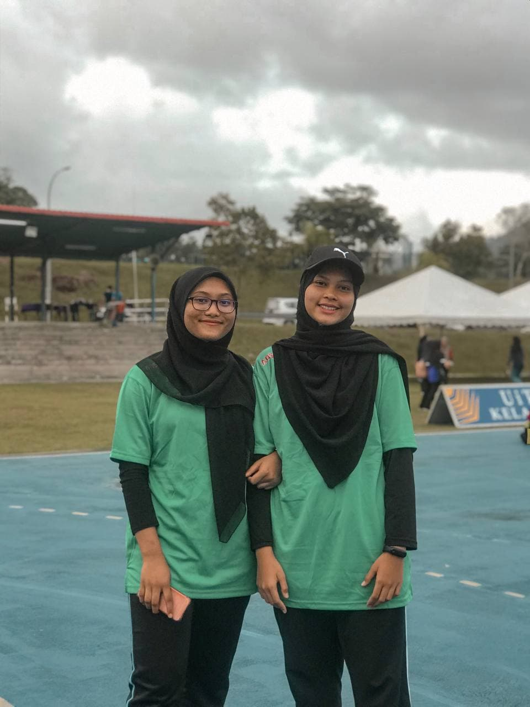
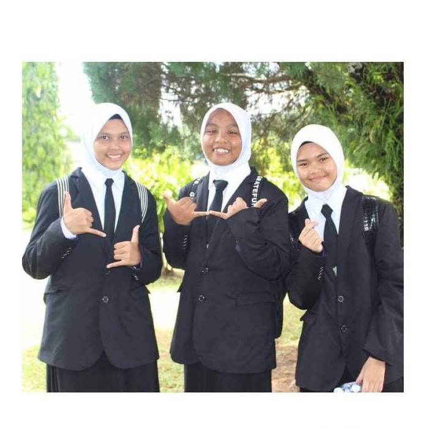
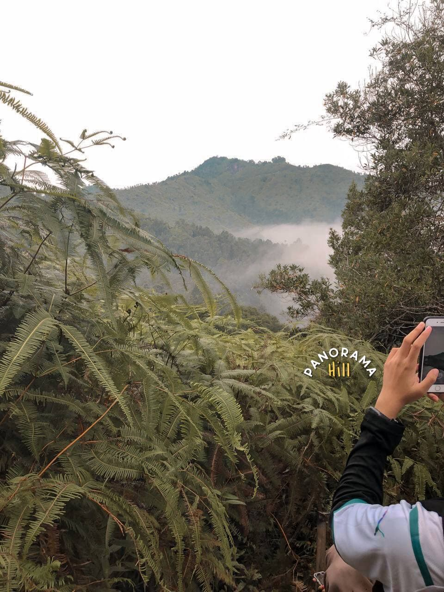
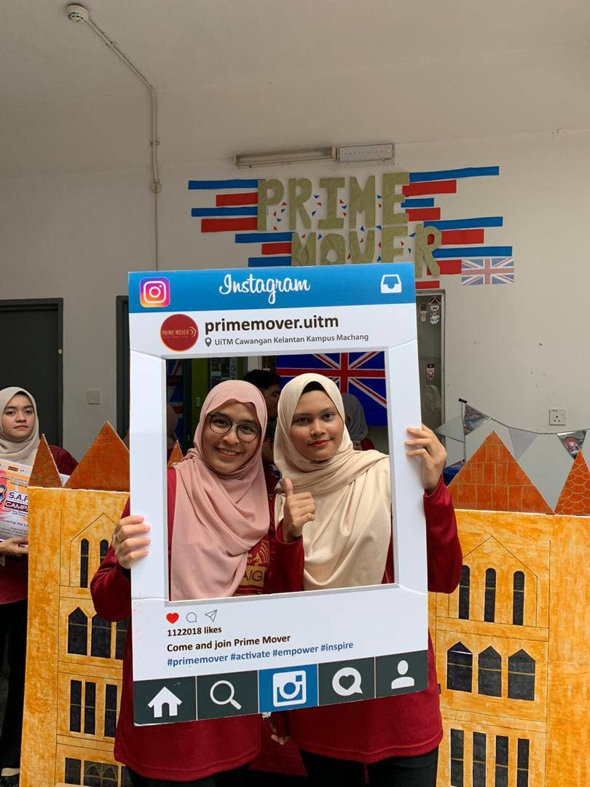
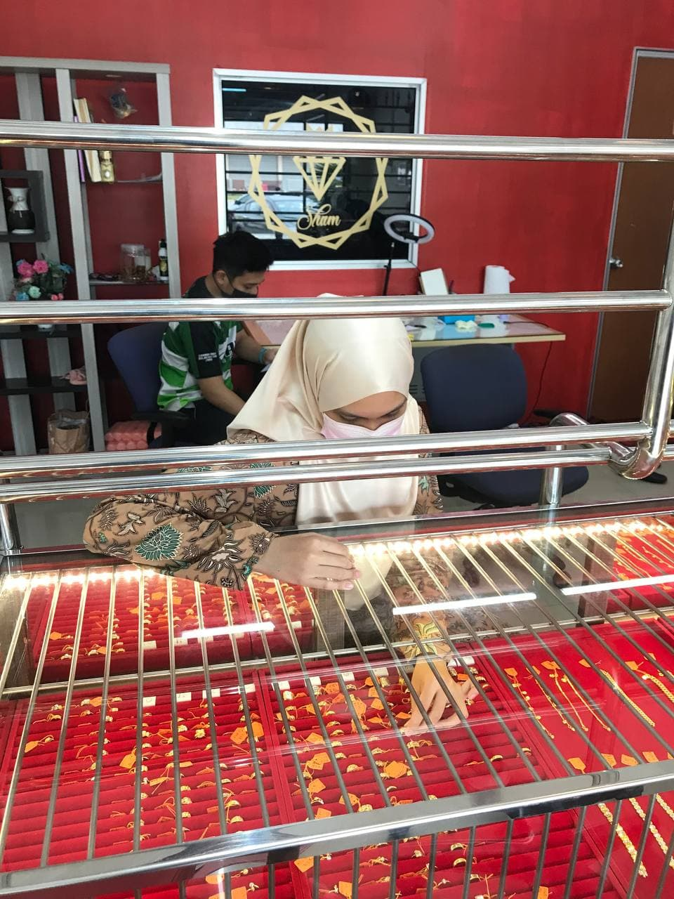
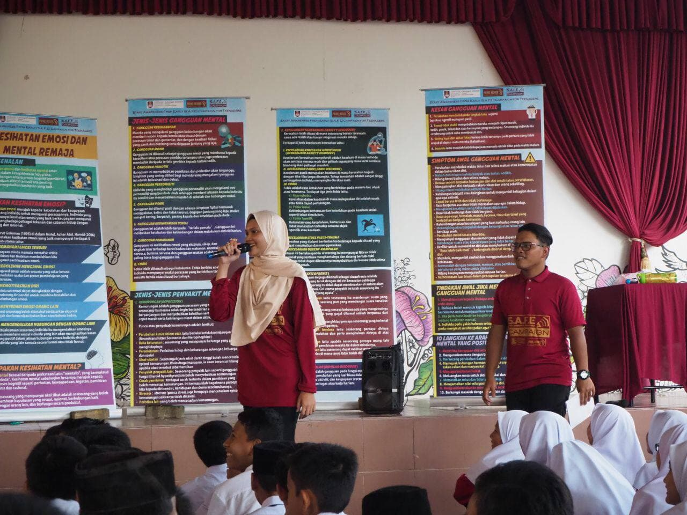
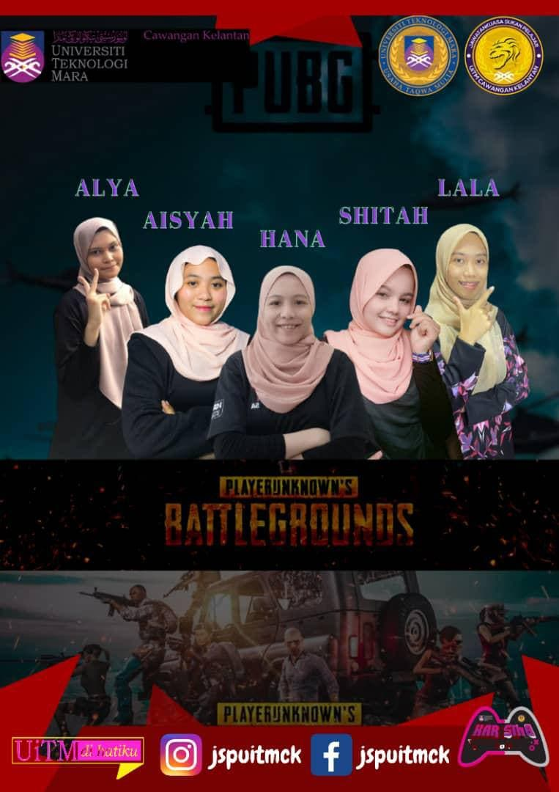

MY EXPERIENCES

For every semester, my uni's college will organize tournament which is CGAMES Colleges. In this tournament, every college must send teams to participate for every games such as netball, volleyball, futsal, handball, e-sports games for instance Pubg Mobile, PES and Mobile Legend. During that tournament week, my senior pursuade me to join her team for volleyball team, finally we won for the second place.

This is a photo of me and my highschool friends which is Hazni and Fatin. At that time, we was selected by school to join Forum's competition. I don't know why at that time i quite confident and enjoy that moment without any fears. But now, i think my confident become less, so i need to find my confidence level back to comeback stronger and be the passionate woman

When i have a leisure time, i will go for hiking, joging, playing badminton and exercise at lake that near from my house. Actually, if you can see in this photo that shown the view of panaroma from Panaroma Hill. This is my first time hiking at this hill. Before this i just hiking at Pelindung Hill with my friends. This hill quite risky and dangerous to climb and hilly. It takes around 40 minutes to reach to the top of the hill. For me when we reached at the top of the hill, it is the moment to see the beautiful view which is sunset. I recommend for those who want to hiking, please take a breakfast first to prevent faint, vomiting or cramps.

For every semester, my university will organize ESKEP's day which is every academic and non-acadmic club must to participate and promotes our club and invite new students to join club that have in UiTM. Basically Prime Mover is one the non-academic club under UiTM's Kelantan HEP.

Last semester break, my mom pursuade me to do part time job as sales girl at Kedai Emas Sham in Kuantan, the shop is near from my house. At first i did not want because i afraid with that work that's quite risky and especially i don't have any experiences as sales girl in promoting gold and jewellery. So i made decisions to give a try and do my part time job as sales girl at that shop in a month while waiting my next semester. Overall this job quite fun and interesting even though at first i felt pressure with the new environment in handling customer. The salary that i got also worth it. This kind of experience, for me is quite expensive because a few shop did not want worker that don't have any experienced in gold and jewellery. So i'm grateful i'm the one who got selected to work there.

This is me and Syafiq. We give a talk and do a awareness campaign at primary and secondary school in every state includes Medan, Indonesia. Basically we give awareness about mental health, abuse and sexual and drugs. At that time, i need to give a talk about mental health, this is my first time talk infront of many student, at first i feel i can do but finally i made it. I guess this is my first step to boost my confidence to talk infront of crowded people.

When i was in the third semester on my diploma, i joined Pubg's Ladies tournament which is namely as KARISMA that organised for every UiTM in Malaysia. Im so proud that i can be the one whose that participate in that tournament. Even though my group did not win but the experience that we got quite valuable for us.

© Copyright 2021 Alya Azra. All Rights Reserved
Any inquiries kindly email me
alyaazra506@gmail.com